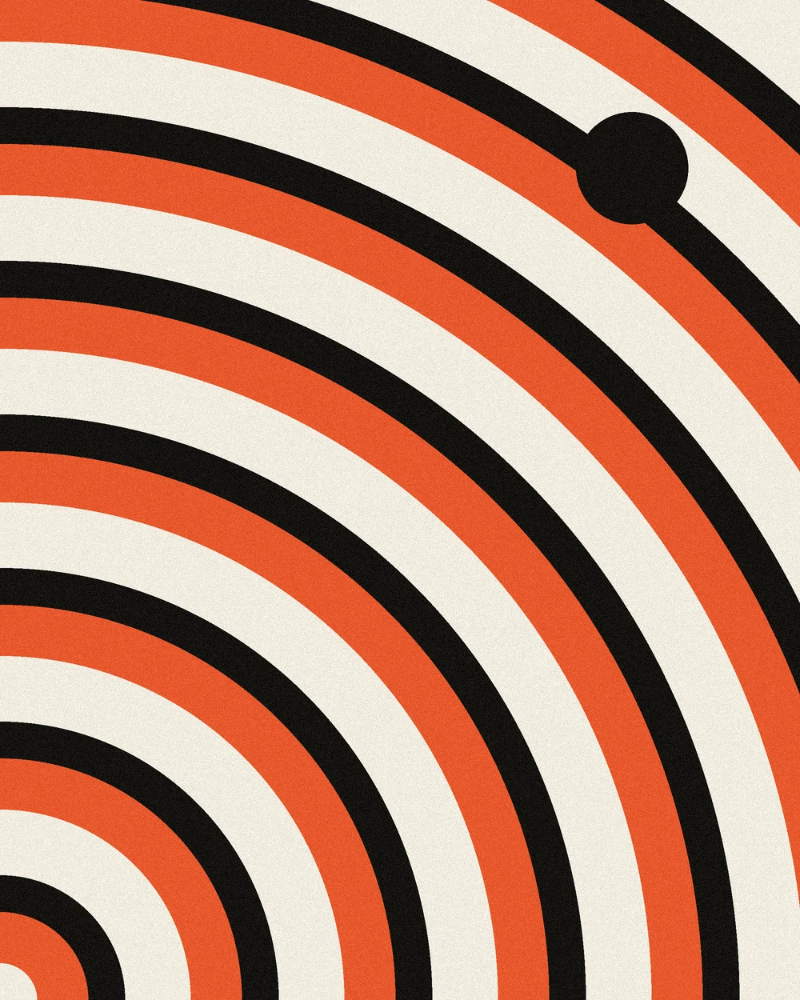
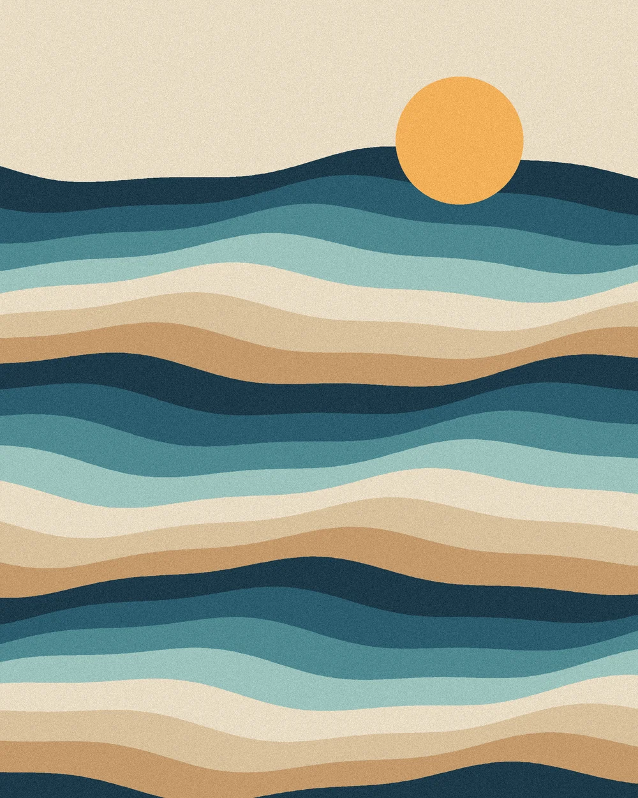

v1.0.0About 6 KB · No framework · MIT
Pages that glide.
Smooth transitions between the pages of an ordinary website. Static HTML, PHP, WordPress themes, anything with links. Pictures travel from a list into the next page, and back again.


01
One script, three paths.
alih picks the best way your visitor's browser can animate, and never breaks a link if it cannot.
-
Native
Chrome, Edge, Safari 18.2 and newer
The browser itself animates from one page to the next with cross-document view transitions. alih only names the elements that belong together, picks the direction, and asks the browser to prerender pages you are about to open.
Your browser -
Soft
Browsers without cross-document transitions
Links are fetched in the background, the main content is swapped in place, and the address bar, title, Back button, and scroll position behave as usual. Shared elements still morph where the browser has same-document view transitions.
Your browser -
Fade
Older browsers
A short fade between pages. If anything goes wrong at all, alih steps aside and lets the browser load the page normally.
Your browser
02
Add it in two lines.
Put both tags in the head of every page. That is the whole setup for a fade-and-slide between pages.
-
Load the CSS and the script
<link rel="stylesheet" href="https://rezaaryam.github.io/alih/alih.css"> <script src="https://rezaaryam.github.io/alih/alih.js"></script>
Keep the script in the head and do not defer it: the browser needs it before the first frame of each page.
-
Mark what should travel
<!-- list page --> <a href="low-tide.html"> <img src="low-tide.webp" data-alih="art-low-tide"> <h2 data-alih="title-low-tide">Low Tide</h2> </a> <!-- low-tide.html --> <img src="low-tide.webp" data-alih="art-low-tide"> <h1 data-alih="title-low-tide">Low Tide</h1>
Same key on both pages, and the element morphs. Only the card you clicked is named, so a list of a hundred items stays fast.
-
Wrap the content that changes (optional)
<main data-alih-root> ... </main>
Used by the soft fallback to know what to swap. Without it, alih uses
<main>, then the whole body.
03
Options and events.
Everything has a sensible default. Change it on the script tag, or in CSS.
| On the script tag | Default | What it does |
|---|---|---|
data-mode | auto | auto, native, soft, or off. Visitors can also add ?alih=soft to a URL to compare. |
data-animation | slide | slide, fade, or none for the page itself. Shared elements always morph. |
data-root | [data-alih-root], main | What the soft fallback swaps. |
data-prefetch | true | Prerender (native) or prefetch (soft) a page when its link is hovered or touched. |
data-manual | off | Do not start on load; call Alih.start(options) yourself. |
| On links and elements | What it does |
|---|---|
data-alih="key" | Elements with the same key on two pages morph into each other. |
data-alih-direction="back" | Slide the other way, for links like "All prints". Real Back and Forward are detected on their own. |
data-no-alih | Leave this link, or everything inside, to the browser. |
--alih-duration, --alih-shift | CSS variables for speed and slide distance. |
Alih.mode; // "native", "soft", or "off"
Alih.on("load", ({ url }) => { // soft mode: re-run your page scripts here
console.log("now showing", url);
});
document.addEventListener("alih:start", (e) => console.log(e.detail.shared));
04
Works everywhere.
The richest effect where the browser allows it, and a working page everywhere else.
| Browser | Mode | Shared elements |
|---|---|---|
| Chrome and Edge 126+ | Native | Yes |
| Safari 18.2+ (macOS and iPhone) | Native | Yes |
| Firefox and others with same-document view transitions | Soft | Yes |
| Older browsers | Soft with fade | No, a short fade instead |
| Reduced motion turned on | Any | No animation at all |
Version numbers follow the public release notes of each browser. The automated tests in this repository run in Chromium, for both the native and the soft path.